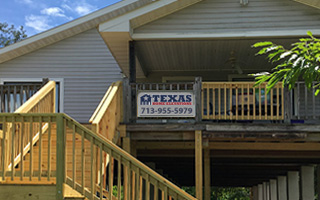

Professional & Experienced Pasadena Home Elevation Services

Texas Home Elevations are Pasadena home elevation experts showcasing fantastic quality construction, customer focused service and above all, caring about you, the homeowner.
Our experienced and professional team of home elevation pros are dedicated to providing you with reliable and dependable service. We take great pride in our customer service and attention to detail. Our staff is ready to help with everything from initial planning of your home elevation project through the final clean up and walk through. Our goal is to provide our clients with a strong, responsive company that knows how to get the job done correctly, on time, within budget, and with pride. As a full service home elevation contractor, we offer a complete range of services - from planning and budgeting, design, materials, permitting, and construction.
We welcome the opportunity to show you how we can satisfy your home elevation needs. Our team of home elevation experts are here to help you through every step of your residential project by taking away your stress and making it an enjoyable and easy process for you. Our commitment to quality is only matched by our dedication to your complete satisfaction.
Contact us today for a no-obligation consultation or request a quote!
Texas Home Elevations - Pasadena Home Elevation
Our Pasadena home elevation contractors service all types of residential homes with complete knowledge and expertise. The experience of our Pasadena home elevation contractors sets us apart from our competition. We specialize in electrical, plumbing, kitchen remodeling, gutters. staircases, veneer demolition, new construction, home inspections repairs and much more! For a complete list of what we offer please visit our services page.
Texas Home Elevations is committed to providing our Pasadena clients with the finest quality home elevation service with professionalism and attention to detail. We take care of each client’s needs from start to finish and are available around the clock to answer any questions you may have or clarify anything about your project. We are there for you throughout the entire process.
- Pasadena Home Elevation
- Pasadena Home Elevation Contractors
- Pasadena Flooring
- Pasadena Concrete Decking
- Pasadena Patios
- Pasadena Electrical
- Pasadena Home Elevation Services
- Pasadena Decks
- Pasadena Veneer Demolition
- Pasadena Downspouts
- Pasadena Staircases
- Pasadena Doors
Professional & Experienced Pasadena Home Elevation Contractors
When you’re living in Pasadena, Texas or the surrounding regions, leave the home elevation work to the professionals at Texas Home Elevations. We provide professional home elevation services for valued local throughout the local region.
Texas Home Elevations works together with home owners to help beautify their properties while providing the highest degree of professionalism and value. Our goal is to always complete your project to your satisfaction on time and on budget. No home elevation job is too big or too small. Give us a call today and see what we can do for you!